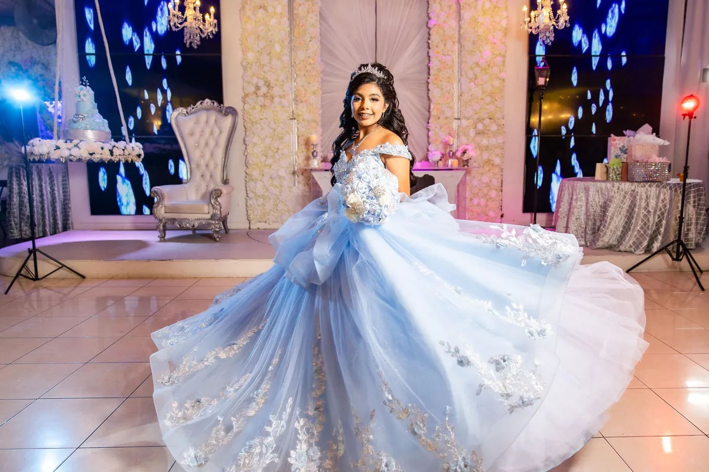

Working with Orlin was easy from the first call. He knew exactly where to be and we ended up with photographs we keep coming back to.

He made my daughter feel comfortable the whole session. The photographs look like her, not like poses.

We received the gallery sooner than expected and the film captured details we had not even noticed that day.